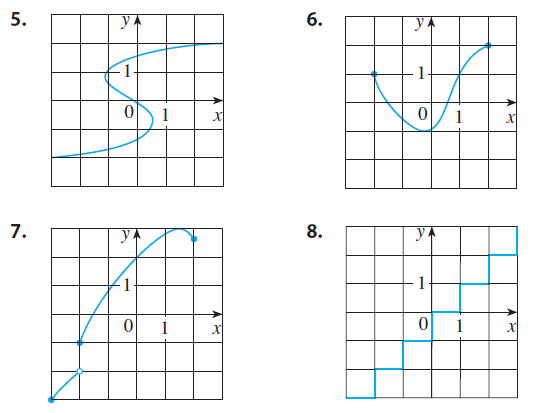

5-8 Determine whether the curve is the graph of a function of x. If it is, state the domain and range of the function.

Solution:
5. The curve is not the graph of a function because the graph fails the
vertical line test intersecting the curve more than once.
6. The curve is a graph of a function because it passes the vertical
line test intersecting the curve only once. The minimum x value is -2
and the maximum is 2. The minimum y value is -1 and the maximum is 2.
Therefore, the domain is \([-2,2]\) and
the range is \([-1,2]\).
7. The curve is a graph of a function because it passes the vertical
line test intersecting the curve only once. The minimum x value is -3
and the maximum is 2. The minimum y value is -3 and the maximum is 3,
but the values between -2 and -1 don’t exist. Therefore, the domain is
\([-3,2]\) and the range is \([-3,-2) \cup[-1,3]\).
8. The curve is not the graph of a function because the graph fails the
vertical line test intersecting the curve more than once.